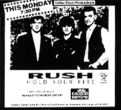

|

|
The Washington Post December 1, 1987 Rush's Big-Bang Rock By Todd Yasui It's ironic that Rush has progressed to the point where its songs are about such weighty topics as nuclear Armageddon and technological dehumanization, and yet the biggest audience reaction is when explosions or lasers erupt on stage. Last night at Capital Centre, there were times when more attention was focused on the projection screen above the stage than on what was going on below it. For the most part, though, it was impossible not to stare at drummer Neil Peart. Although bassist Geddy Lee and guitarist Alex Lifeson are both proficient on their instruments, Peart remains one of the most talented and inventive drummers in modern music. The instrumental "YYZ" sounded like a guitar-bass-drum orchestra, not only technically outstanding, but also entertaining for any fan once Peart began his drum solo. The show ended with one of the Canadian trio's earliest compositions, "In the Mood," a mindless rollicking rocker accompanied by good old-fashioned balloons that were dropped into the audience rather than mind-melting lights and detonations.
|
{kind=link}